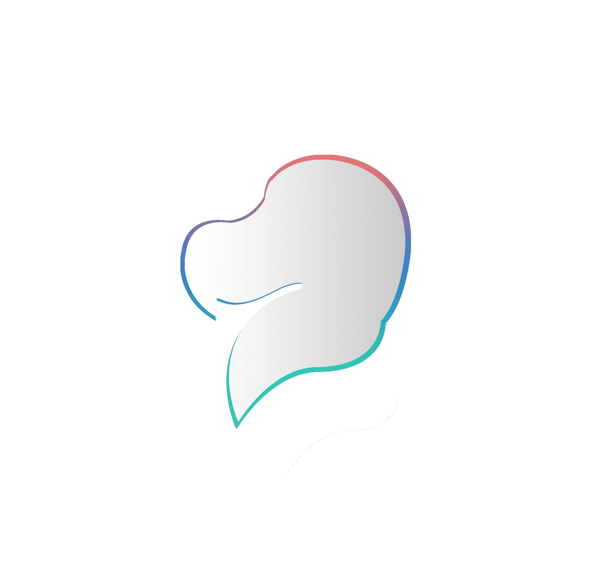
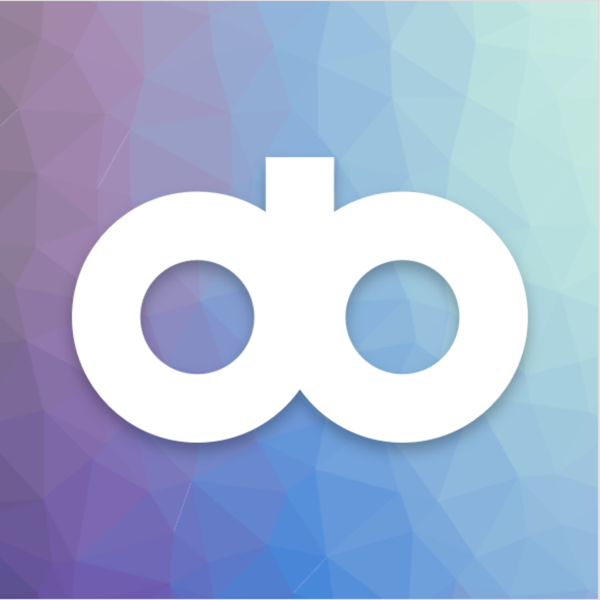

Here is my short info..
I always have an interest in computers. I met with computers at the age of 4. I built myself a desktop personal computer
at the age of 13. But in high school, I met biology and I loved it. I study molecular biology
and genetics at first and studied until the end of the third year of my University education.
But my passion for computer technologies was remarkable, even then I decided to start over computer
engineering and changed my major.
While I was about to finish university, I developed testicular self-examination mobile
application as an interdisciplinary project between medicine and information technologies. This
project aims to create awareness about testicular cancer.
Today, this project is an ongoing TUBITAK (Scientific and Technological Research Council
of Turkey) project.
You can find project details from here.
Currently, I am working at the software company which is Valensas Computer Solutions
Inc., as a mobile application developer.
Here you may find my current and past projects at my GitHub account.
Education
-
Computer Engineering 2014 - 2017
Koç University, Bachelor of Science
-
Moleculer Biology and Genetics 2011 - 2014 (Left)
Koç University
-
Science 2007 - 2011
(TAL) Tekirdağ Anatolian High School
Selected Projects
-
Rasyonel App - Rasyonel 2018

Purpose of this project is creating tracking application for Turkish multiple choice exams.
**This app was honored as 1st educational top paid app in App store and Google Play Store at October 2018.For project web site click here
-
TFXTarget - Valensas Technology Solutions Inc. 2017
TFXTARGET is designed to make your foreign exchange and precious metal trades in a most comfortable way. The application has many functions which enables simultaneous monitoring and trading of world foreign exchange and precious metals such as Gold and silver for 5 days and 24 hours. You can place orders in the currency you specify, or you can do instant trades with market rates. I worked in this project as an Android developer.
-
Testisim - Koç University Spring 2017

This project aims to development of web and mobile environment for man health care which targets to make awareness about testicular cancer. With this platform, users can control themselves to determine if they have any symptoms regarding their genital areas. They will be asked to do some Testicular self-examination periodically, and they will be warned via different channels such as push-notifications, e-mails... etc. Additionally, they may be advised a doctor visit with showing closest medical care centers. This project also provides user interface for the doctors for submitting their latest researches or announcements. Users can fallow latest news about testicular cancer related topics. This project will be developed for mobile android and iOS devices and web platforms. In this project both user interface side and server side will be implemented.
You can access project web site from here.
Experience
-
Software Engineer 2017 - Present
Valensas Technology Solutions Inc. - Android Developer
-
Freelence Web Developer 2014 - 2017
I developed web pages for university labs.
-
Teaching Assistant Summer 2017
Mobile Device Programming Course assistant in Koç University
Technical Skills
-
Programming Languages: Kotlin, Swift, Java, Python, PHP, Scheme, JavaScript, HTML, CSS, VHDL, MATLAB
-
Applications: Illustrator, Photoshop, X-Code, Android Studio, Microsoft Office Programs (University Certificated), WireShark
-
Operating System: macOS, Microsoft Windows, Linux based OS’s
-
Extra Knowladge: Design Patterns, UML Diagrams, Object Oriented Design, Testing and Management of Engineering applications.
-
Android Development: Design Patterns (MVP, MVVM, MVC), Retrofit, Dagger 2, EventBus, Android Animations, Testing
Language
- Turkish - Native
- English - Advanced
- German - Beginner